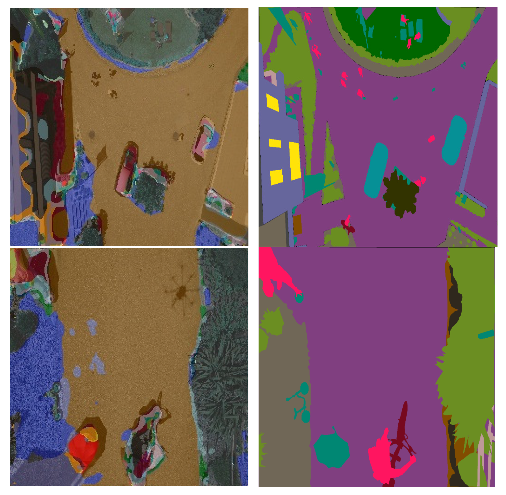

|
Ajith Kumar V I'm a Senior Consultant at Deloitte in India. My expertise centers on designing, building and deploying scalable machine learning solutions, with strong focus on developing robust ML pipelines for large-scale applications. Email / Github / Linkedin / Medium Blogs / Youtube Channel / Scholar / |

|
InterestsI am interested in generative AI and applied machine learning. Currently focusing on developing expertise in the following areas:
|
Notable Open Source Contributions
📦 Project:
📌 Note: |
PublicationsMost of my research projects are related to computer vision. |
|  |
Feng Sun, Ajith Kumar V, Guanci Yang, Ansi Zhang, Yiyun Zhang Algorithms, 2021 The proposed model includes circle connect layers, which is the backbone of ResUNet-a architecture. The model possesses a contracting part with residual bottleneck and circle connect layers that capture context and expanding paths, with sampling layers and merging layers for a pixel-wise localization. publication |
|
Ajith Kumar V, Hammad Ali, Feng Sun, Deepjyoti Saha, Ilias Papachristos ICVIP, 2020 The proposed model includes circle connect layers, which is the backbone of ResUNet-a architecture. The model possesses a contracting part with residual bottleneck and circle connect layers that capture context and expanding paths, with sampling layers and merging layers for a pixel-wise localization. publication |
{kind=link}
{kind=link}